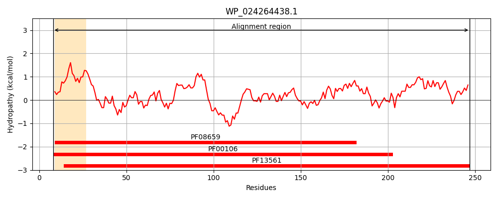
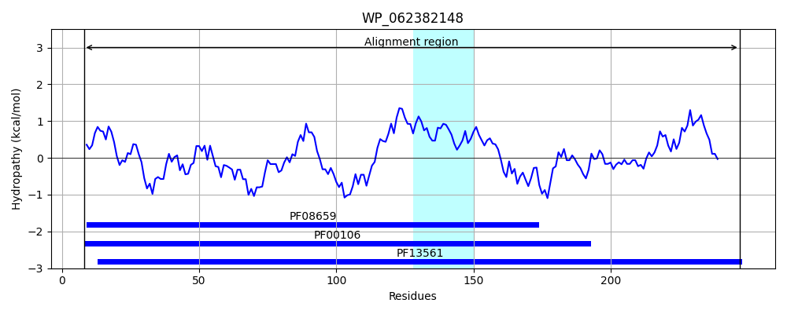
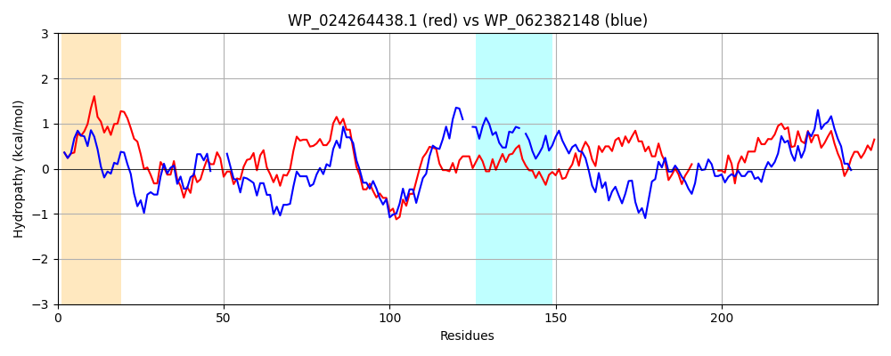

Hit Accession: WP_062382148
Hit TCID: 1.A.115.1.5
Hit Description: gnl|BL_ORD_ID|21287 gnl|TC-DB|WP_062382148.1|1.A.115.1.5 SDR family oxidoreductase [Pseudomonas abietaniphila]
Mach Len: 247
e:0.000000
Query TMS Count : 1
Hit TMS Count: 1
TMS-Overlap Score: 0.000000
Predicted Substrates:None
BLAST Alignment:
Score: 364 , Bit scores: 144 bits, E-value: 1.8e-42, Alignment length: 247, Percentage identity: 38
Query: 8 KHVLVTGGSSGIGLGIALGFARAGAKVTITARTPSRIDSAIGQAAEQGLTLRGLTCNVSHAEEVKACVAEAAQQWGGLDIVCCNAGIFPSAPLADMSEQQWDEVQAINSKGTFLTVQAALPWLKRAEYGRIILTSSITGPVTGYPGWAHYAASKAAQLGFMRSAALELAGDNITVNAVLPGNIVTEGLRDMG-------EDYIAGMASAVPLKRLGTVEDIAAAALFFASRQAGYITGQSLIVDGGQ 247
K LVTGG++GIGL A FA GA V IT R + +D+A+ + G+ + ++ E++ A + + G LD++ NAG PL D++E Q+ + N KG TVQ ALP L A+ +ILT S G +G ++ YAASKAA F R+ L+L N+ VN + PG T GL D+ + + +AS +P+ R+G E+IAAAALF AS A ++ G L VDGGQ
Sbjct: 8 KIALVTGGTTGIGLATAKRFAEEGAYVYITGRRQAELDAAVARVGNA----TGVQVDSTNLEQLDALYRQIGTEKGRLDVLFANAGGGSMLPLGDITEAQYQDTFDRNVKGVLFTVQKALPLL--AKGASVILTGSTAGS-SGTAAFSVYAASKAAVRAFARNWILDLKDRNVRVNTLSPGATRTPGLVDLAGPDAAQQQGLLDYLASQIPMGRVGEPEEIAAAALFLASDDASFVNGIELFVDGGQ 247 | Protein Hydropathy Plots: |
|---|
|  |  |
Pairwise Alignment-Hydropathy Plot:
|
|---|
|  |